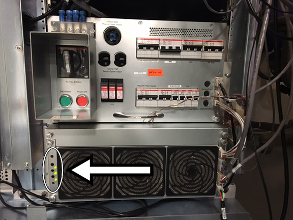
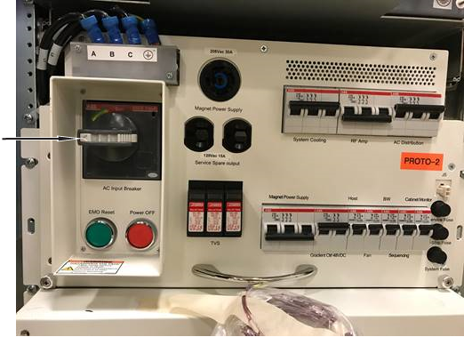

Apply LOTO before servicing the GOC or items in the operator workspace. Applying LOTO ensures a safe environment when working on these items.
Prerequisites
Procedure
Notify affected personnel that LOTO will be applied.
Make sure power is reaching the system PDU at the ISC by measuring the voltage at the test points as follows:
Put the multi-meter knob in volt AC.
Measure the voltage between any two test points (VR, VS, and VT).
The voltage at the test points should be a 100:1 step down of actual voltage reading as appropriate to the system. For example, if the system is configured as 480 volts then the multimeter reading should show 4.8 volt.
Figure 1. System PDU test points

Make sure the host computer is shut down.
On the Integrated System Cabinet (ISC), turn off the ISC breaker.
Figure 2. ISC breaker

Apply LOTO to the ISC breaker.
Wait 5 minutes for stored energy to dissipate.
Make sure power is not reaching the system PDU at the ISC by measuring the voltage at the test points as follows:
Put the multi-meter knob in volt AC.
Measure the voltage between any two test points (VR, VS, and VT). It should show zero voltage reading.